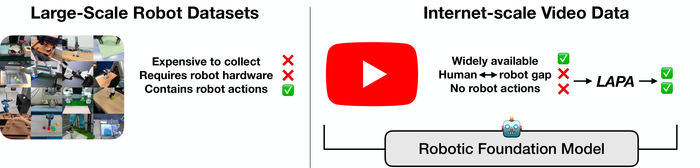
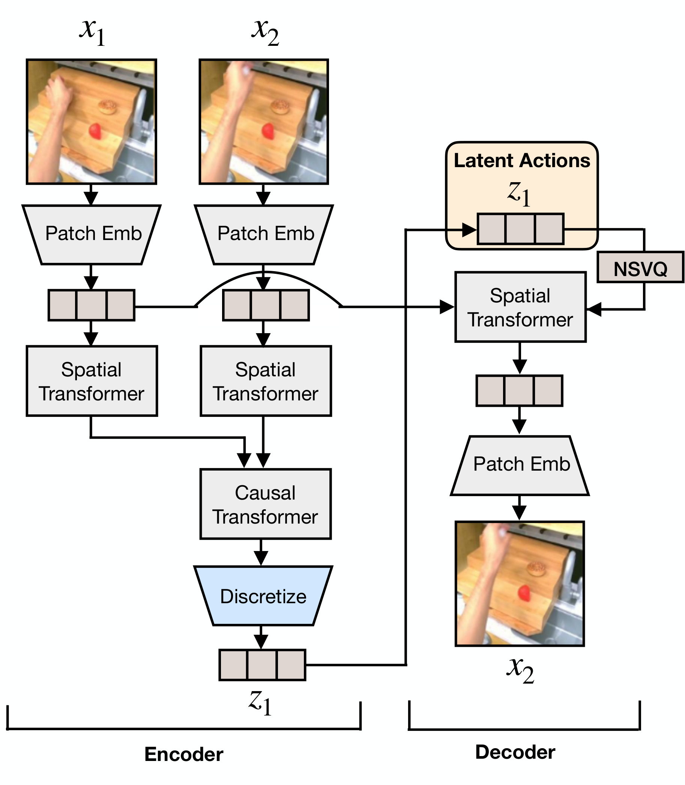
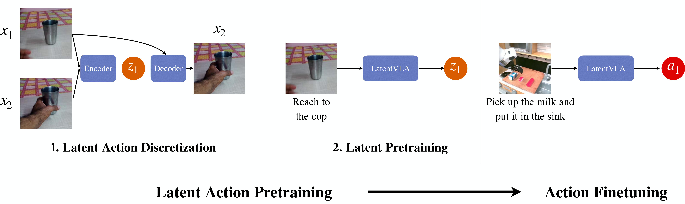
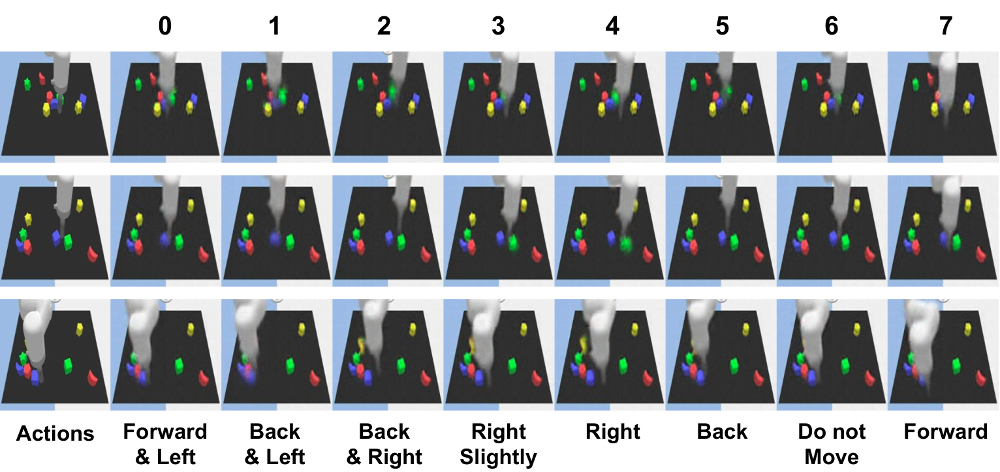
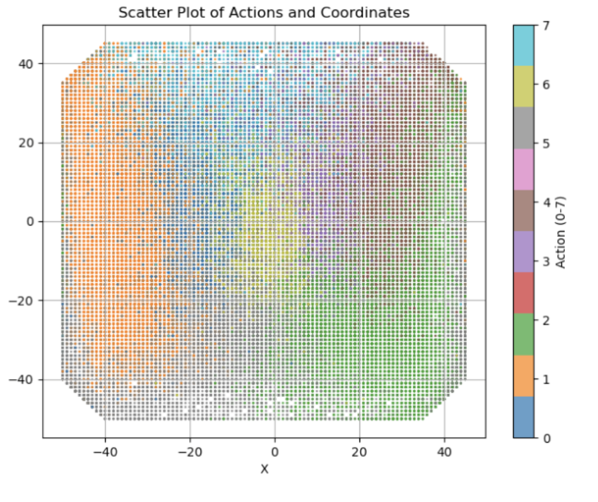
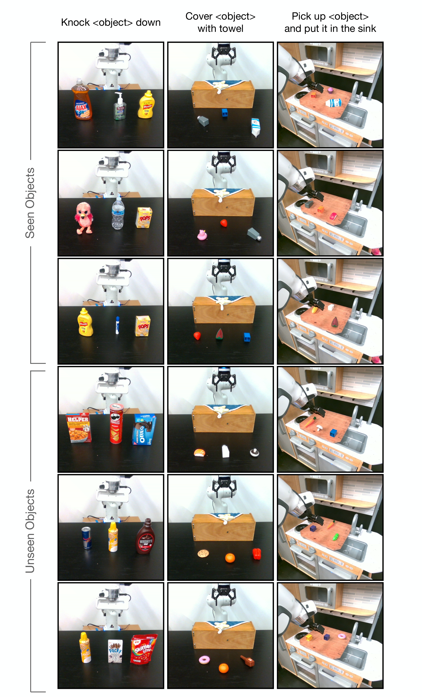

Latent Action Pretraining from Videos
1. 论文速览与证据链
一句话贡献
LAPA 先用 VQ-VAE 从相邻帧量化离散 latent action，再训练 VLA 根据图像和指令预测该 token，最后以少量机器人动作数据把 latent action 映射到可执行控制。
元数据与阅读定位
| 技术类型 | Latent action pretraining (LAPA) |
|---|---|
| 关键词 | LAPA、latent action model、VQ-VAE、video pretraining、action-free data、Language Table、SIMPLER、Open-X |
| 开源情况 | ICLR 2025 论文、项目材料公开；完整训练规模与数据许可需逐项确认 |
| 适合程度 | 很高：latent action VLA 从无动作视频预训练的奠基工作 |
从哪里开始读
第一阶段 inverse dynamics encoder 读取相邻帧，VQ-VAE codebook 量化离散 latent action，forward model 用当前帧和 code 重建下一帧；第二阶段 VLA 从观察与任务描述预测 code；第三阶段用少量带动作轨迹微调，把 hidden/latent token 映射到真实控制。 阅读时先确认中间表示是否在部署端运行，再用主结果和消融判断它究竟改善了感知、动态预测还是动作生成。
图表证据链
| # | 原始图 | 支持的主张与边界 |
|---|---|---|
| 1 | 无动作视频预训练问题定义 | 图中对比机器人数据昂贵有动作与互联网视频廉价无动作，明确 LAPA 要补的监督缺口。 |
| 2 | VQ latent action tokenizer | inverse encoder、codebook 与 forward reconstruction 形成闭环，显示离散 code 的学习来源。 |
| 3 | 三阶段 LAPA 流程 | 从视频 tokenizer 到 latent VLA，再到 physical action fine-tuning，清楚标出哪些阶段需要动作标签。 |
| 4 | latent code 语义分析 | 不同 code 与帧间运动对应，用于检查 codebook 是否捕捉方向/操作而非只记外观。 |
| 5 | Language Table 泛化分析 | 热力图按任务和 seen/unseen 组合展开，说明收益在低数据和跨任务设置中的分布。 |
| 6 | 真实机器人扩展结果 | 多任务 rollout 和失败/成功示例展示语义泛化，但 action mapping 仍依赖目标平台数据。 |
2. 问题与动机
问题定义
VLA 预训练通常依赖遥操作动作标签，限制数据规模；互联网视频虽丰富，却没有机器人动作且 embodiment 分布不同。LAPA 把未标注视频中的帧间变化离散成 latent action，作为 VLA 的伪动作监督。
现有路线为何不足
VPT 从视频学表示但不显式建立动作 token，UniPi 用视频生成规划却在长时域可能产生错误帧。LAPA 把 representation learning、latent action prediction 与 physical action adaptation 分为三阶段，保留 VLA 的语言条件接口。
作者的解题假设
LAPA 先用 VQ-VAE 从相邻帧量化离散 latent action，再训练 VLA 根据图像和指令预测该 token，最后以少量机器人动作数据把 latent action 映射到可执行控制。 该假设只有在统一骨干、数据和评测下仍带来增益时才成立。
4. 方法、表示与训练
端到端信息流
第一阶段 inverse dynamics encoder 读取相邻帧，VQ-VAE codebook 量化离散 latent action，forward model 用当前帧和 code 重建下一帧；第二阶段 VLA 从观察与任务描述预测 code；第三阶段用少量带动作轨迹微调，把 hidden/latent token 映射到真实控制。
核心表示
离散 codebook 把连续视频变化压缩为有限 latent action vocabulary。理想 code 应对 embodiment 不敏感但保留任务相关运动；重建 objective 可能混入相机和背景，因此论文用动作下游性能与 latent 可视化检查 token 语义。
训练阶段与目标
预训练来源包括 BridgeV2、Open-X 与 Something-Something-v2；Language Table 设置用 18.1 万轨迹预训练，仅用 1k/7k 动作轨迹微调。真实 Franka 比较 Bridge、Open-X 和 human-video 三种预训练来源。
推理与部署路径
部署时 VLA 根据当前图像和语言生成 latent action，再由少量动作数据训练的 policy head 输出物理动作；VQ forward reconstruction 只用于预训练。该结构降低动作标签需求，但新 embodiment 仍需少量 mapping 数据。
无动作视频预训练问题定义

VQ latent action tokenizer

三阶段 LAPA 流程

5. 实验、结果与消融
数据集、任务与协议
实验覆盖 Language Table 五类推块任务、SIMPLER WidowX 四任务和真实 Franka 三类多指令任务，共 9 个 task category。评测区分 seen/unseen objects、unseen combinations 与 unseen instructions。
主要定量结果
Language Table in-domain 1k 微调下 LAPA seen/unseen 为 62.0/49.6%，显著高于 VPT 44.0/32.8；真实 Open-X 预训练 LAPA 平均 50.1%，高于 OpenVLA 43.9%。只用 human videos 也达 34.0%，显示正迁移但仍弱于 Open-X。
消融与因果解释
论文比较 latent action 数量、帧间隔、预训练数据和 action-labeled VLA。LAPA 在少量微调下缩小与 ActionVLA 的差距，却未在所有 setting 超越带动作预训练；这说明无标签视频解决规模问题，但不能消除 embodiment calibration。
证据没有覆盖什么
从当前评测覆盖看，VQ code 可能表示视觉差异而非真实动作，且三阶段训练误差会级联；互联网视频的人手视角、相机运动和机器人控制差异仍大。论文证明数据可用，不等于 latent action 已具备唯一物理语义。
latent code 语义分析

Language Table 泛化分析

真实机器人扩展结果

6. 复现路径与工程风险
最小可行复现
最小复现先在 Language Table 训练小型 VQ-VAE latent tokenizer，检查 code 使用率和 next-frame reconstruction，再训练 VLA 预测 code，最后用 1k 动作轨迹微调。真实复现还需 Franka 标定和 Open-X/Bridge 数据清洗。
验收标准
Language Table in-domain 1k 微调下 LAPA seen/unseen 为 62.0/49.6%，显著高于 VPT 44.0/32.8；真实 Open-X 预训练 LAPA 平均 50.1%，高于 OpenVLA 43.9%。只用 human videos 也达 34.0%，显示正迁移但仍弱于 Open-X。 复现时至少应恢复相同方向的增益，并报告同一随机种子、数据规模和延迟预算。
复现风险清单
| 环节 | 具体风险 |
|---|---|
| 数据 | 需取得论文列出的训练数据、相同切分与时间同步；未公开数据必须单列。 |
| 模型 | 需固定视觉/VLM 骨干、tokenizer 与动作头，避免把模型规模差异误判为方法收益。 |
| 训练 | 按论文阶段顺序复现，并保留无 latent/world objective 的严格对照。 |
| 评测 | 同时复现主指标、消融和失败类型；开环结果不能替代闭环安全。 |
| 硬件 | 最小复现先在 Language Table 训练小型 VQ-VAE latent tokenizer，检查 code 使用率和 next-frame reconstruction，再训练 VLA 预测 code，最后用 1k 动作轨迹微调。真实复现还需 Franka 标定和 Open-X/Bridge 数据清洗。 |
7. 分析、局限与边界
最有价值的贡献
综合方法与实验证据，LAPA 先用 VQ-VAE 从相邻帧量化离散 latent action，再训练 VLA 根据图像和指令预测该 token，最后以少量机器人动作数据把 latent action 映射到可执行控制。
作者结论的适用边界
将结论外推前需要保留以下边界：VQ code 可能表示视觉差异而非真实动作，且三阶段训练误差会级联；互联网视频的人手视角、相机运动和机器人控制差异仍大。论文证明数据可用，不等于 latent action 已具备唯一物理语义。
可信的后续实验
后续应把 LAPA 与 JEPA/几何监督结合：保持离散 action interface，但用 future semantic target、光流/姿态约束过滤背景变化，并测试 code 在不同机器人和驾驶数据之间的可迁移性。
8. 组会问答与阅读结论
Q1. LAPA 如何不用动作标签预训练？
A：用 VQ-VAE 从相邻帧量化 latent action，再让 VLA 预测这些 code。
Q2. 三阶段分别做什么？
A：学 tokenizer、学图像/语言到 latent action、用少量物理动作做映射。
Q3. 真实结果如何？
A：Open-X 预训练 LAPA 平均 50.1%，OpenVLA 为 43.9%；human-video-only 为 34.0%。
Q4. 是否完全摆脱机器人数据？
A：没有；最后的 physical action mapping 仍需少量目标机器人轨迹。
Q5. 最重要的后续改进？
A：减少 code 对像素变化的依赖，并验证跨 embodiment 的稳定语义。
我的阅读笔记
结合本批论文的比较，我的后续关注点是：后续应把 LAPA 与 JEPA/几何监督结合：保持离散 action interface，但用 future semantic target、光流/姿态约束过滤背景变化，并测试 code 在不同机器人和驾驶数据之间的可迁移性。